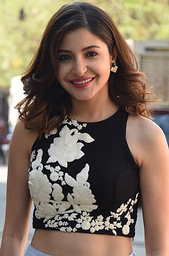

Anushka Sharma
 Anushka Sharma (born 1 May 1988) is an Indian actress and film producer. She has established a career in Hindi films, and is one of the most popular and highest-paid actresses in India. She is the recipient of several awards, including one Filmfare Award from seven nominations. Anushka Sharma was although born and brought-up in Bengaluru but basically, her family belongs to Uttarakhand. Anushka’s mother is from Garhwal region of Uttarakhand and her father Colonel Ajay Sharma is from the plains. Anushka’s parental home is at Chakkhuwala in Dehradun. Anushka has good command over both local languages of Uttarakhand, Garhwali and Kumaouni.
Hemant Pandey
Hemant Pandey is an Indian film, theatre and television actor, most known for his role as Pandeyji in TV series, Office Office (2000). Originally from Pithoragarh, Uttarakhand, Hemant has worked in all fields of acting in theatre, television shows and movies also.
Himani Shivpuri
Himani Bhatt Shivpuri (born 24 October 1960 in Dehradun) is an Indian actress known for her supporting roles in Bollywood films and Hindi soap operas. Himani was born into a middle class Garhwali family settled in Dehradun, Uttrakhand. Her father Haridutt Bhatt was a Hindi teacher at The Doon School.
Prasoon Joshi
Prasoon Joshi (born 16 September 1971) is an Indian lyricist, screenwriter, poet and marketer. He is the CEO of McCann World group India and Chairman (Asia Pacific), a subsidiary of global marketing firm McCann Erickson. He has been appointed as the Chairperson of the Central Board of Film Certification on 11 August 2017. Prasoon has received the Filmfare Best Lyricist Award three times, in 2007 and 2008 and again in 2014 for the Hindi movie Bhaag Milkha Bhaag. He has also received the National Film Award for Best Lyrics twice, for his work in Taare Zameen Par (2007), and Chittagong (2013). He was awarded Padma Shri by the Government of India in 2015, for his contributions towards the field of Arts, Literature and Advertising. Prasoon Joshi spent his earliest years in Almora, in north Indian state of Uttarakhand. His father, D.K. Joshi, served as a PCS officer with the Civil Service of the state government and later became the additional director of the state's Education Service. These early years all across the northern India – and spending time in places like Almora, Nainital, Tehri, Chamoli Gopeshwar, and later Rampur, Meerut and Dehradun. His mother, Sushma Joshi, a lecturer in political science, performed for the All India Radio for over three decades.
Urvashi Rautela
Urvashi Rautela (born 25 February 1994) is an Indian film actress and model who predominantly works in Hindi films. Rautela was crowned Miss Diva 2015 and represented India at the Miss Universe 2015 pageant. Urvashi was born and raised in Haridwar, Uttarakhand, India. She made her Bollywood debut with the film Singh Saab the Great (2013), followed by Sanam Re (2016), Great Grand Masti (2016), Kaabil (2017) and Hate Story 4 (2018).
Raghav Juyal
Raghav Juyal (born 10 July 1991) is an Indian dancer, choreographer and actor. He is renowned as the King of Slow Motion for his surreal dance moves in slow motion style and for his reinvention of the Slow Motion Walk. His stage name Crockroaxz describes his dancing style which is an amalgamation of being powerful like a crocodile and creepy like a cockroach. He is an anchor and is popular with inspiring dancers, who imitate his trademark moves and dance style, popularly known as Crock-style which means the mixing of Crocodile and Cockroach. He is the son of Deepak Juyal, an advocate and Alka Bakshi Juyal. Raghav is currently living in Mumbai and comes from his home town Dehradun, Uttarakhand. Born in a Garhwali family he belongs to his ancestral village Khetu in uttarakhand.
Tom Alter
 Thomas Beach Alter (22 June 1950 – 29 September 2017) was an Indian actor. He was best known for his work in Hindi cinema and the Indian theatre. In 2008, he was awarded the Padma Shri by the Government of India. Born in Mussoorie, Uttarakhand, Tom Alter was the son of American Christian missionaries of Swiss German ancestrys. He was educated in Mussoorie's Woodstock School. In 1954, his parents started an ashram in Rajpur (near Dehradun), called "Massihi Dhyaan Kendra" and they settled there. Tom wrote columns for newspapers and journals for over ten years. He was the first to take a video interview Indian cricketer Sachin Tendulkar in 1988. Alter was a life member of International Film And Television Club and International Film And Television Research Centre of Asian Academy of Film and Television.
Thomas Beach Alter (22 June 1950 – 29 September 2017) was an Indian actor. He was best known for his work in Hindi cinema and the Indian theatre. In 2008, he was awarded the Padma Shri by the Government of India. Born in Mussoorie, Uttarakhand, Tom Alter was the son of American Christian missionaries of Swiss German ancestrys. He was educated in Mussoorie's Woodstock School. In 1954, his parents started an ashram in Rajpur (near Dehradun), called "Massihi Dhyaan Kendra" and they settled there. Tom wrote columns for newspapers and journals for over ten years. He was the first to take a video interview Indian cricketer Sachin Tendulkar in 1988. Alter was a life member of International Film And Television Club and International Film And Television Research Centre of Asian Academy of Film and Television.
Tigmanshu Dhulia
Tigmanshu Dhulia (born 3 July 1967) is an Indian film dialogue writer, director, actor, screenwriter, producer and casting director known for his works in Hindi cinema and Television. He wrote the dialogues for the 1998 film Dil Se.., which was the first Bollywood film to chart in the UK top ten, and was screened at the Berlin International Film Festival. His directing career has also garnered international recognition with the biographical film, Paan Singh Tomar premiered at the 2010 BFI London Film Festival. Dhulia, who has his roots in the hills of Uttarakhand was born and raised in Allahabad, Uttar Pradesh.
Jubin Nautiyal
Jubin Nautiyal (born 14 June 1989) is an Indian playback singer. Jubin was awarded with Upcoming Male Vocalist of the Year at 8th Mirchi Music Awards, 2016 for his song "Zindagi Kuch Toh Bata (reprise)" from Bajrangi Bhaijaan and his other achievement is the Rising Musical Star Award (2015) received at Zee Business Awards. Early in his career, he has sung several hit songs for Hindi films. He has also recorded songs for film in various Indian languages. Jubin showed an inclination towards music at an early age of four taking his father's love for singing. He did his schooling up to eighth grade from St. Joseph's Academy, Dehradun. Thereafter, he continued his schooling at Welham Boys' School, Dehradun.
Bobby Cash
Bal Kishore Das Loiwal or "Bobby Cash", as he is generally known as, (born 13 February 1961) is an Indian country music singer, songwriter, guitarist and composer who lives in Clement Town, a suburb of Dehradun district in the state of Uttarakhand. He is praised by media for being India's first international country music artist who has charted singles in Australia, and also for being the only Indian country music artist to be featured in a documentary film,The Indian Cowboy...One in a Billion, aired on ABC Television (Australia) in January 2004 and on Discovery channel in India in June 2004. He is known as "The Indian Cowboy, one in a billion" by media.